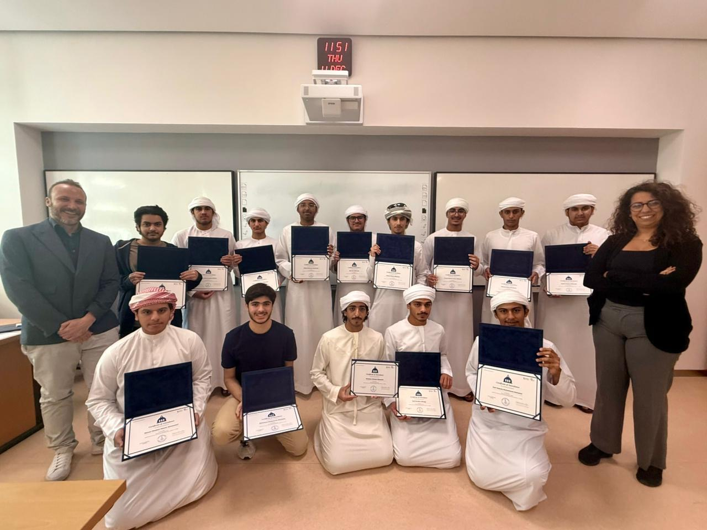

Sorbonne University Abu Dhabi
Mathematical Theory & Applications
At Sorbonne University Abu Dhabi, I participated in a specialized program centered on high-level mathematical theory and its real-world applications. The curriculum focused on strengthening my foundation in calculus and algebraic logic, challenging me to apply rigorous quantitative analysis to complex scenarios. Engaging with world-class faculty in this intensive setting allowed me to sharpen my precision and deepened my understanding of numerical concepts as the framework for scientific progress.
